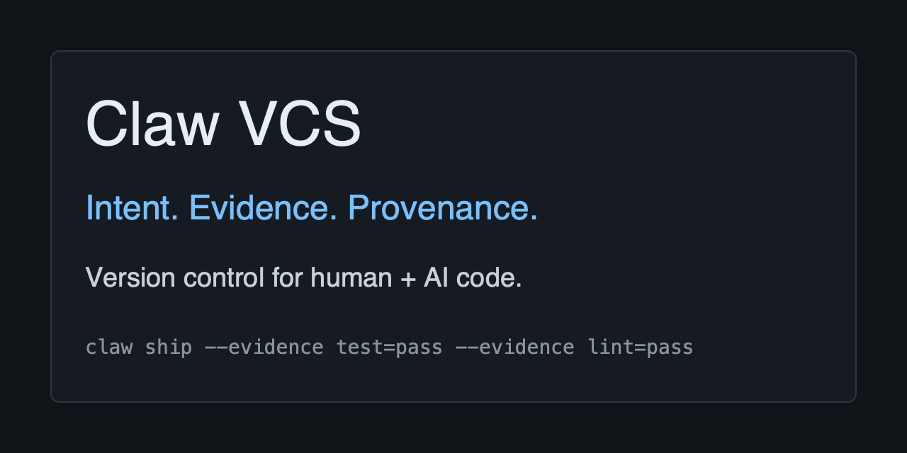

Claw VCS
Intent-native version control for human and AI code. Claw keeps intent, changes, revisions, signed evidence, capsules, and policy in the repository so agent-authored work can be reviewed offline.

Intent
Work starts with a structured reason, not just a diff. Intents connect goals, changes, policies, and evidence.
Evidence
Capsules bind claimed checks, runner metadata, signatures, and revision IDs so policy can fail closed.
Provenance
Objects, refs, policies, and signed claims live in the repository, not only in a hosted build system.
Run The First Demo
The basic demo creates an intent, records a change, attaches a policy, ships evidence, and integrates a branch.
cargo build -p claw --locked
CLAW_BIN=target/debug/claw examples/basic-demo/scripts/demo.shWhat It Proves
Claw can verify that a key signed a capsule claiming specific evidence for a specific revision.
A signature does not prove the claim is true. Trust still depends on runner integrity, key management, policy configuration, and human judgment. Claw makes those assumptions visible in source history.